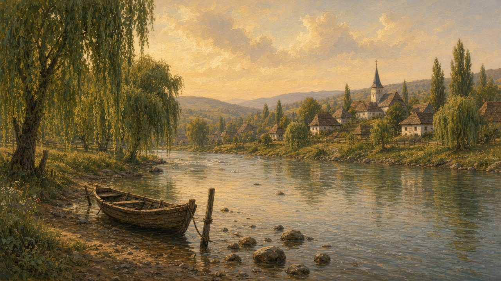
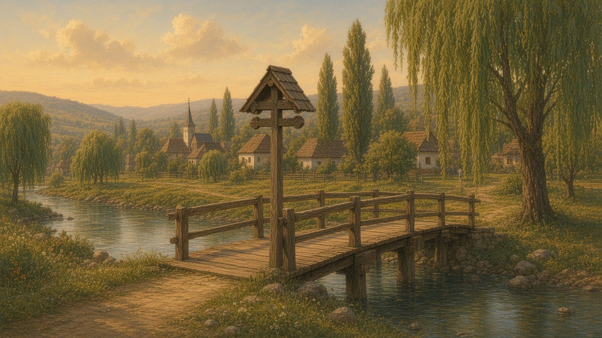

Rivers
Râuri. The country is cut by water that people still name before they name the road. A valley is often the river’s first, and the town sits where a bridge or a ford made sense.

Dunărea
The Danube is the border and the highway at once. It comes in from the west, holds the south of the country for a long stretch, and then opens into the Delta before the Black Sea. Barges, ferries, and willow banks. In a dry summer the water drops and the islands grow. In a wet spring the low fields take the flood and people talk about it for years. Fishermen still work the quieter arms. The Delta is its own world — reeds, birds, houses on stilts — and it is not the same as the industrial river that passes Galati or the tourist stretch near the Iron Gates. That maze is on the delta page. One name, several rivers in practice. What lives in those reeds is on the wildlife page. Where that water meets salt, the story leaves the river — see the sea. The city at the window is the short lesson on Constanța.
The bank is the part people actually use. Willows, a skiff pulled up, a path worn to the water. In a dry summer the stones show, and a child is told not to trust them. In a wet spring the low field takes the flood, and the talk outlasts the water: which kitchen had mud, which road was a ford for a week, which mark on the pier is this year’s. A ferry still waits while a barge goes by. Before taps, wash-day was that grass — sheets spread, and an eye on the rise. You ask which arm, and which year it came up.
Olt, Mureș, Someș
The Olt runs south out of Transylvania through a mountain corridor and into the Danube. Towns along it keep the river in their address the way other places keep a ridge. The Mureș crosses the middle of Transylvania west toward Hungary; it is wide enough that a child learns early not to trust a shortcut across the stones. The Someș (and its branches) waters the northwest. People say “pe Olt,” “pe Mureș,” the way they say “over the hill” — the preposition is the map.
The address is the river before it is a number. A house is “pe Olt,” and a letter still finds the valley that way. On the Mureș a child learns the stones: which ones hold in August, which hole under the willow does not, and that a shortcut after rain is how a boot is lost. The Someș is colder. People still point at the ford used before the bridge, and at the garden one spring took. Flood talk here is local — “up to the poplar” — and everyone on that bank knows the tree.
What the water still organizes
Market towns grew where a river met a road. Mills needed the fall of water. Wash-days used the bank before indoor taps. Sheep paths follow the valley floor because the grass is better there. Even when the highway ignores the old ford, the village calendar still notices the thaw and the first mosquitoes. A troiță at a bridge is the same water, only marked. The year page keeps the seasons; this page is only the water under them — see the year.
The mark on the pier is how a town keeps a wet year: paint, a line, and the winter everyone still names. Thaw is the week the lane watches the creek go from ice to mud. Wash-day sits in the same memory — the bank, the sheets, the rise that took one — and so does the ford the highway forgot. You still hear it as a place, not a date.
You do not need a complete list of tributaries. You need the habit of asking which river a story is standing beside. The answer is often shorter than a geography book, and more useful: Dunărea, Olt, Mureș, or the creek with no fame that still fills the bucket.
The creek with no fame
Most days the famous river is a name on a sign. The water you meet is a pârâu behind the last gardens, cold in July, loud for a week in April. A picnic under the poplars lasts until someone puts a foot in. Nobody stays long. That creek, cut into a race, used to turn a wheel — the job is on the mill. Higher on the slope the melt fills the shaft. The yard water on the well often starts here.
You carry a bucket when the tap is off, or you did, and the path shows it. Sheep take the valley floor because the grass is better there — the walk is on shepherds. The northern creeks already sit on North. Timber on those slopes is on the forest. This page is only the water they share with the south, including the one nobody puts on a map.

The bridge and the thaw
A wooden bridge, or the concrete one that replaced it, keeps the flood in paint. Lines on the pier, a year beside each, the highest one a story the lane still tells. The old ford is there when the water is low: stones, the track a cart used, a place you do not try after rain. A troiță at the end of the bridge is the same water, only marked. People nod and keep walking. The highway may ignore the ford. The village does not.
Thaw is the week everyone watches. Ice goes thin, then black, then away, and the creek runs muddy and too fast for the stones. In January that picnic place under the poplars was a skin of ice. A child who learned which stretch holds, and which hole does not, is told to stay off it now. That season is on winter. You need which bridge still shows last year’s mark, and whether the creek with no fame is the one that fills the bucket.